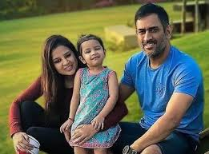
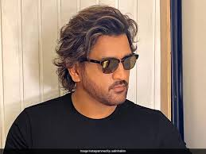
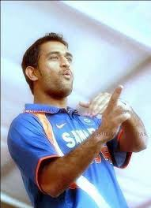

Mahendra Singh Dhoni is one of the most well-known cricketers in the world. Successful cricketers in Indian history. He holds several records, including most runs scored in International Cricket Council (ICC) tournaments, most wickets taken by captains in Tests, and the fastest half-century in ODIs. He is also the first captain in history to win every game. Three ICC trophies, namely the World Cup (2), Champions Trophy and the World Twenty20. He was awarded Padma Shri, India’s fourth-highest civilian award, in 2009.
family
In 2008, Sakshi met MS while working as an intern at Taj Bengal, Kolkata. On the last day of her internship, Sakshi met the star cricketer through a common friend. After the meeting, Dhoni asked for Sakshi’s number through the friend and both started their relationship. On July 4, 2010, MS Dhoni married Sakshi in Dehradun after having more than a couple of years of relationship. After marriage, she is a parent to Ziva Dhoni, who was born in February 2015. Sakshi was born in Assam and got her primary education at Welham Girls School in Dehradun.
Personal Images
 Disclaimer
This figures are used by me.
Signature